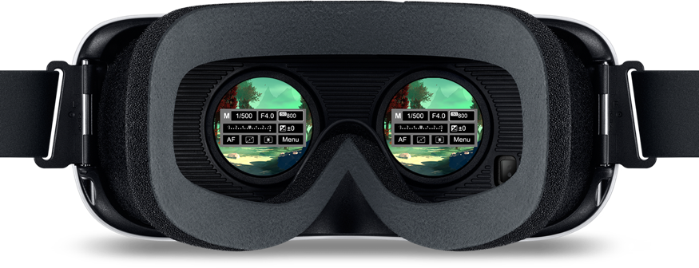

ABOUT
Redefining the way consumers interact with Canon products. The Virtual Reality Camera Simulator provides a captivating experience for people to try out various combinations of Canon cameras and lenses. Users can adjust aperture, shutter speed, and ISO before they are immersed into a VR environment to capture a photo. Everyone can learn a little more about the fundamentals of photography and feel less intimidated by Canon's fleet of cameras and lenses. Available on the Oculus Store.


ROLE
Branding, Motion Graphics, UI, UX